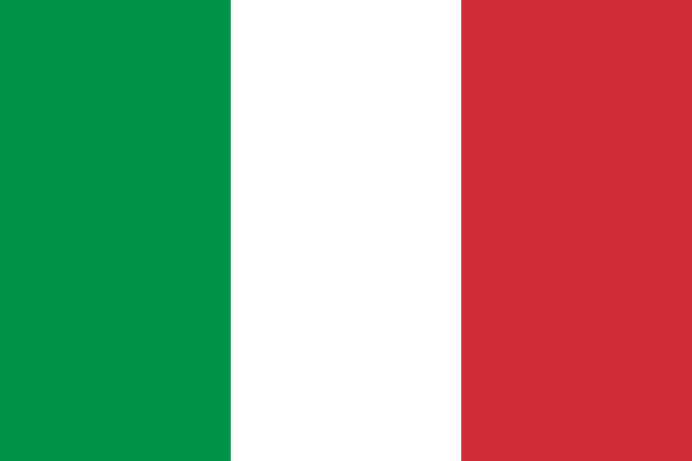
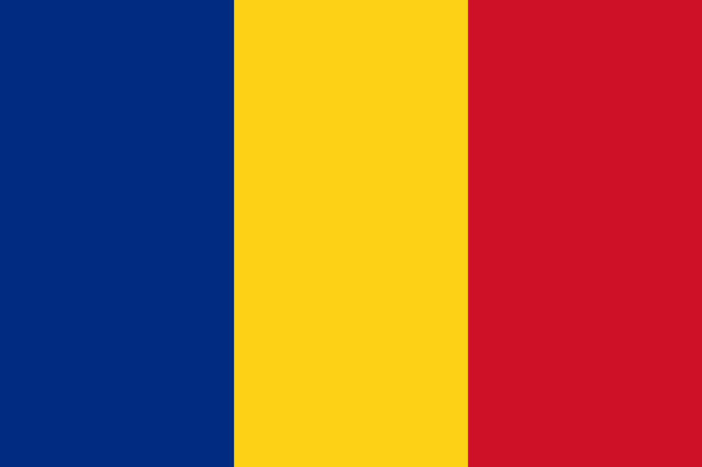

Európai-Unió
Ausztria
Belgium

Bulgária
Ciprus
Csehország

Dánia

Észtország

AUSZTRIA
Főváros
Bécs
Lakosság
kb. 8 879 000 fő
Terület
83370 km²
Államforma
Szövetségi köztársaság
Pénznem
EUR
Gazdaság
Ausztriában az alapanyaggyártó ágazatoknak nagy szerepe van a gazdaságban. Ezek a hazai (kősó, vasérc, magnezit) és külföldről behozott ásványkincsekre épülnek. Az energiát a feldolgozásukhoz vízerőművek biztosítják. A kohászati központok, amelyekhez fejlett gépipar kapcsolódik, a Mura völgyében és a Duna mentén találhatóak. A legsokoldalúbb iparral a dunai kikötőváros, Linz és a közeli Steyr rendelkezik. Az ország második legnépesebb városa, Graz, a fa-, papír- és bútoripar központja.
Bécs
Bécs, az ország fővárosa, igazi világváros és fontos kulturális központ. A régmúltat idéző belvárosában számos múzeum, képzőművészeti kiállítás és komolyzenei hangverseny vonzza a kultúrát szerető közönséget. Bécsben található a Nemzetközi Atomenergia Ügynökség (IAEA) és az OPEC (Kőolaj-exportáló Országok Szervezete) központja.
Mezőgazdaság
Az állattenyésztés az elsődleges ágazat a mezőgazdaságban. A magasan fekvő területeken a havasi pásztorkodás a jellemző gazdálkodási forma, az alacsonyabb tengerszint feletti magasságokban pedig hagyományos istállózó állattartás folyik.
Idegenforgalom
Az idegenforgalom jelentős bevételi forrás Ausztriában. Minden évszaknak megvan a vonzereje: télen a síelni vágyókat, nyáron a túrázókat és az extrém sportok kedvelőit várják. A rendezett, tiszta környezet rendkívül fejlett infrastruktúrával párosul.
Ausztriai hírességek
Wolfgang Amadeus Mozart, Franz Schubert, Johann Strauss, Arnold Schwarzenegger, Arnold Palmer
Tipikus ausztriai ételek
Wiener Schnitzel, Gulasch, Sacher Torte, Apfelstrudel
CSEHORSZÁG
Főváros
Prága
Lakosság
kb. 10 600 000 fő
Terület
78866 km²
Államforma
Szövetségi köztársaság
Pénznem
CZK
Ipar
Az országban kiterjedt ásványkincsek találhatók, melyeket sokoldalúan feldolgozóipar hasznosít. A Karlovy Vary-i porcelán- és kerámiaipar például kaolint használ, míg České Budějovice-ben a grafitból ceruzákat készítenek. Az ország nehézipari központja Ostrava, melynek "acélszíve" nevezetű területén számos acélgyár működik.
Gépgyártás
A Csehországban fontos iparágak között szerepel a gépgyártás is, melynek jelentős központjai a Škoda személygépkocsi gyártó Mladá Boleslav és a mezőgazdasági gépek gyártásáról ismert Brno.
Mezőgazdaság
A mezőgazdaságban a medencékben főként búzát és kukoricát termelnek, azonban Csehország behozatalra szorul a legtöbb gabonaféléből és takarmánynövényből. A sör alapanyagaként használt sörárpa és komló is fontos mezőgazdasági termékek, melyekből Plzeň városában is jelentős mennyiségű sört gyártanak.
Híres cseh emberek
Martina Navratilova, Miloš Forman, Madeleine K. Albright, Sissy Spacek
Cseh nemzeti ételek
Guláš, Pečená kachna, Kuře na paprice, Vepřo knedlo zelo
DÁNIA
Főváros
Koppenhága
Lakosság
kb. 5 882 000 fő
Terület
42,933 km²
Államforma
Monarchia
Pénznem
Dán korona
Dánia területe
Dánia a Jylland-félszigetre és a tőle keletre fekvő majdnem 500 szigetre van telepítve. Az ország területe korábban összefüggött a Skandináv-félszigettel, azonban az utolsó jégkorszak utáni emelkedő tenger szétválasztotta őket. A dombos síkság átlagos magassága csak 30 méter a tengerszint felett.
Népsűrűség
Bár Dánia északi területeire jellemző az alacsony népsűrűség, az ország átlagos népsűrűsége magasabb az Európai Unió átlagánál. A legnépesebb terület Közép-Dánia, ahol a népsűrűség meghaladja a 300 fő/km²-t.
Tipikus skandináv jellegzetességek:
A skandináv építészet alapvetően fából készül, és a festett házak (piros, sárga vagy kék) színes képet nyújtanak Észak-Európában. Az időjáráshoz való alkalmazkodás érdekében az északi emberek praktikus ruházatot viselnek. Az északi emberek általában nyugodt és kiegyensúlyozottak, és hajlandóak segíteni, ha szükség van rá.
Mezőgazdaság
A szántóföldek kb. 60% -át teszik ki Dánia területének. A dán mezőgazdaság és élelmiszeripar nemzetközi szinten is jelentős, és a modern, gépesített gazdaságokat általában családi vállalkozások üzemeltetik. A gazdák összefognak a vetőmagok beszerzésében, a gépek vásárlásában, a raktárak bérlésében és az értékesítésben. Az összefogás révén csökkentik a költségeket.
Híres dán emberek
Hans Christian Andersen, Karen Blixen, Niels Bohr, Søren Kierkegaard
Dán nemzeti ételek
Smørrebrød, Røget laks, Stegt flæsk, Stegt flæsk med persillesovs
BULGÁRIA
Főváros
Sofia
Lakosság
kb. 7 100 000 fő
Terület
110 879 km²
Államforma
Parlamentarizmus
Pénznem
Leva
Soknemzetiségű
A Török Birodalom hosszú ideig uralkodott a Balkán-félszigeten, ezért a balkáni népek független nemzetállamai csak későn jöttek létre. A Balkán-félsziget az egyetlen terület Európában, ahol ilyen nagy mértékű a különböző nemzetiségek keveredése.
A Balkán
A Balkán-félsziget lakóinak többsége szláv népcsoportba tartozik, de vallásuk gyakran eltérő. Az iszlám követői is megtalálhatók több országban a nyugati és keleti kereszténység hívei mellett.
A nemzetiségek keveredése sok problémát okoz a térségben, és az 1990-es évek elején a délszláv háború kitörésének is az egyik fontos tényezője volt. Sokan elhagyták a Balkánt, hogy Nyugat-Európában munkát keressenek, és azóta is sokan próbálnak vendégmunkásként boldogulni.
A Balkán-félsziget a kontinens legszegényebb országainak ad otthont, és gazdaságukat a szocializmus évtizedei és a háborús konfliktusok is szétzilálták. Az idegenforgalom nagy lehetőséget kínál a térség számára, de ehhez elengedhetetlen az infrastruktúra fejlesztése.
Főváros
Brüsszel
Lakosság
kb. 11 000 000 fő
Terület
30 528 km²
Államforma
Parlamentarizmus
Pénznem
Euro
Benelux
A Benelux államok az európai integráció előmozdítói voltak, mivel a második világháborút követően Belgium, Hollandia és Luxemburg eltörölték egymás közötti vámjaikat, valamint szabad mozgást biztosítottak az áruk, munkaerő és tőke számára. Az országok az Európai Gazdasági Közösség alapítói közé tartoznak, és jelenleg az euróövezet és a schengeni övezet tagjai. Több európai uniós intézménynek is székhelye van Brüsszelben.
Földrajzi helyzet
A Benelux államok földrajzi szempontból Németország, az Egyesült Királyság és Franciaország között helyezkednek el, és fontos kereskedelmi partnerek számukra. Az Atlanti-óceánra nyitott tengerpartjuk és a tengerbe torkolló folyóik is jelentős szerepet játszanak. Antwerpen évszázadok óta összeköttetésben áll a világgazdaság távoli szereplőivel.
Népesség
Belgium népessége magas, mintegy háromszorosa a hazánknak, legnépesebb városai Brüsszel és Antwerp. A flamandok lakják Flandriát, míg a vallonok a Vallóniát. A nyelvi határ mentén fekvő Brüsszel kétnyelvű város. Belgium lakosságának mintegy negyede más országból érkezett.
Kétarcú táj
Belgium északi-északnyugati része síkvidék, míg a délkeleti rész fokozatosan emelkedik, és a dombvidéket az Ardennek követi. Az ipari növények fontos szerepet játszanak Belgiumban, például a len Flandria textiliparának alapanyaga, míg a sörárpa és a komló a belga sör alapanyagaként szolgál.
Vallónia, „a vas és acél völgye”
Vallónia hagyományos iparvidéke az Ardennek ásványkincseire épült. A feketekőszén- és vasércbányák mára már kimerültek, azonban a modern ipari ágazatok mellett az importált nyersanyagok feldolgozása, például a nyersvas- és acélgyártás továbbra is fontos.
Jelentős városok
Brüsszel - főváros, EU intézmények, NATO központ
Antwerpen - kikötőváros, vegyipar, gyémántcsiszolás
CIPRUS
Főváros
Nicosia
Lakosság
kb. 1 170 000 fő
Terület
9 251 km2
Államforma
Parlamentarizmus
Pénznem
Euro
ÉSZTORSZÁG
Főváros
Tallinn
Lakosság
kb. 1 316 000 fő
Terület
45 227 km2
Államforma
Parlamentarizmus
Pénznem
Euro
Híres észt emberek
Andres Ehin, Eesti Laul
Észt gasztronómiai jellegzetességek
A legáltalánosabb ételek Észtországban a rozskenyér, a disznóhús, valamint a burgonya és a tejtermékek. Az észt étkezési szokások nagy mértékben kötődnek az évszakok változásaihoz. Alkoholfogyasztás terén az észt emberek a sört, illetve a vodkát részesítik előnyben.
Finnország
Franciaország

Görögország
Hollandia

Horvátország

Írország

Lengyelország

HORVÁTORSZÁG
Főváros
Zágráb
Lakosság
kb. 4 200 000 fő
Terület
56 542 km²
Államforma
Köztársaság
Pénznem
Euró
Turizmus
Horvátország jelentős része az Adriai-tenger partján terül el, amely rendkívül tagolt. A tiszta, átlátszó víz és a kiépített mediterrán üdülőhelyek kiváló lehetőséget biztosítanak a búvárkodásra és vitorlázásra, valamint a jó minőségű szolgáltatásoknak köszönhetően vonzó célpont a turisták számára. A turizmus jelentősen hozzájárul az ország GDP-jéhez, és az idegenforgalomból származó bevételek aránya az Európai Unióban a legmagasabb. Az Isztria-félsziget és Dalmácia, különösen Zadar, Split és Dubrovnik környéke, az ország legfontosabb tengerparti régiói.
A tengerpart könnyebb elérhetősége érdekében Horvátország jelentős összegeket költött az autópálya-hálózat bővítésére.
Ipar
Az ipar elsődleges központja Zágráb és környéke, amely a horvát kultúra és tudomány "fellegvára". Az iparában a képzett munkaerőt igénylő ágazatok kapnak nagy szerepet. Rijeka az ország legfontosabb kikötővárosa, és innen indul az Adria-kőolajvezeték, amely a Közel-Keletről származó kőolajat szállítja tovább Magyarországra.
Híres horvát emberek
Ivan Mestrovic szobrász, Oscar Nemon színész, Luka Modric aranylabdás focista, Nikola Tesla feltaláló és villamosmérnök.
Horvát nemzeti ételek
Burek sa sirom, Kotlovina, Čobana, Fritule
LENGYELORSZÁG
Főváros
Varsó
Lakosság
kb. 38 000 000 fő
Terület
312 679 km²
Államforma
Köztársaság
Pénznem
Zloty
Mezőgazdaság
Az ország Kelet-Közép-Európa legnagyobb kiterjedésű és legnépesebb állama. Nagy része síkvidék, ami miatt a mezőgazdaság fontosabb szerepet játszik, mint más országokban. A fő növények takarmánynövények, amelyeket a szarvasmarha tenyésztéséhez használnak. Emellett sok rozs, cukorrépa és búza is termeszthető a földeken. Azonban a kis parcellákon végzett gazdálkodás nem túl hatékony, és a terméshozamok alacsonyabbak, mint Nyugat-Európában.
Ipar
Az ipar alapját a Lengyel-középhegység és a Szudéták ásványkincsei jelentik. A bányászat ma is fontos, különösen a kőszén, az ezüst és az ólomérc. A Krakkóban található Nowa Huta városrész mellett Felső-Szilézia fontos kohászati központ. A Gdansk és a Szczecin kikötővárosok a Balti-tenger és az Oder torkolatánál találhatóak.
Híres lenygel emberek
Robert Lewandowski, Maria Skłodowska-Curie, Ludwik Zamehhoff, Mikołaj Kopernikusz, Fryderyk Chopin
Lenygel nemzeti ételek
Pierogi, Placki ziemniaczane, Rosół, Pączki, Gołąbki
FINNORSZÁG
Főváros
Helsinki
Lakosság
kb. 5 500 000 fő
Terület
338 145 km²
Államforma
Köztársaság
Pénznem
Euro
A Balti-ősföld
A Balti-ősföld régiója az ősi magja a mi kontinensünknek. Régen itt magas hegységek álltak, de azok mára teljesen elpusztultak. Az emléküket néhány kristályos kőzet megőrizte, amelyek időnként felbukkannak a területen. A jégtakaró hullámzó síksággá formálta a felszínét, és a puhább kőzetekbe mélyedések keletkeztek, amelyek ma tavakat alkotnak, például a Finn-tóvidéken. A keményebb és ellenállóbb kőzetek hullámos sziklahátakat hagytak maguk után, amelyeket vásottszikláknak neveznek.
A tipikus „észak”
A „észak” jellegzetes jegyei hosszú nappalok és hosszú éjszakák. A sarkkörön, mint például Rovaniemiben, ahol a Mikulás él, a nyári napfordulón sosem nyugszik le a nap, míg a téli napfordulón sosem kel fel. Ahogy északra megyünk, ezek az időszakok még hosszabbak lesznek. Finnország lakosságának kb. 5%-át a svéd kisebbség teszi ki, akik fontos kapcsolatot jelentenek a skandináv népekkel. Északon, a határokon átnyúló Lappföldön a nomád számi emberek foglalkoznak rénszarvas-tenyésztéssel, és kb. százezer ember él ebben a területen.
Tipikus skandináv jellegzetességek:
Színes házak
A skandináv jellegzetességek közé tartoznak a színes faházak, amelyek az északi régióban a faépítészet jellemzői. A fa speciális festékkel van kezelve, hogy minél ellenállóbb legyen, és a piros, sárga vagy kék színű házak idilli látványt nyújtanak. Az időjárás elleni védekezés fontos szempont az északon élők számára, és a megfelelő ruházat véd a szeszélyes időjárástól. Az „északi ember” békés és kiegyensúlyozott természetű, távolságtartó, de segítőkész, ha megszólítják.
Híres finn emberek
Markku Aro, Jari Litmanen, Jari Kurri, Mika Häkkinen, Kimi Räikkönen
Finn nemzeti ételek
Runabergintorttu, Hernekeitto, Laskiaispulla, Grillimakkara, Karjalanpiirakka
GÖRÖGORSZÁG
Főváros
Athén
Lakosság
kb. 10 766 000 fő
Terület
131 957 km²
Államforma
Parlamentarizmus
Pénznem
Euro
Gazdaság
Görögország közepes méretű gazdasággal rendelkezik, amely magas államadóssággal és munkanélküliséggel párosul. Athén a gazdasági élet központja, és a főváros régiója teszi ki az ország GDP-jének közel felét. Thesszaloniki északi kikötőváros enyhén ellensúlyozza ezt a helyzetet.
Mezőgazdaság
Görögországban az európai átlagnál magasabb arányban dolgoznak az emberek mezőgazdaságban. Az élelmiszeripar és a könnyűipar a mezőgazdasági termények feldolgozását végzi, míg a tengeri bérfuvarozás és a mazsolatermesztés fontos bevételi források. A görög kereskedelmi hajó flotta az Európai Unió egyik legnagyobbja, és sok nemzetközi nagyvállalat bérel görög hajót áruszállítás céljából.
Turizmus
Görögország a mediterrán térség legnépszerűbb turisztikai célpontjai közé tartozik, és a nyári időjárás és a kellemesen hűs tenger kínál önfeledt kikapcsolódást. A kulturális emlékekben gazdag városok is rengeteg látogatót vonzanak, és a turizmus fontos bevételi forrás. Azonban a turizmus növekedése növekvő terhet jelent a helyi lakosságnak és a környezetnek egyaránt. A turizmus által foglalkoztatottak aránya 25,9%, és hozzájárulása a GDP-hez 20,6%.
Híres történelmi görög emberek
Homérosz, Szophoklész, Periklész, Püthagorasz, Hippokratész
Görög nemzeti ételek
Spanakopita, Moussaka, Tzatziki, Souvlaki, Baklava, Gyros
Franciaország
Főváros
Párizs
Lakosság
kb. 67 000 000 fő
Terület
643 801 km²
Államforma
Parlamentarizmus
Pénznem
Euro
A La Manche-tól a Côte d'Azurig
Franciaország már évszázadok óta vezető gazdasági és politikai nagyhatalom Európában, és ma a világ tíz legnagyobb gazdasága közé tartozik. A korábbi gyarmati területein kiterjedt birodalmat épített ki, bár a legtöbb gyarmat a 20. század második felében függetlenné vált. Azonban néhány terület, az úgynevezett tengerentúli megyék, továbbra is a francia állam részét képezi. Ezek a területek az Európai Unió tagjai, és hivatalos fizetőeszközük az euró.
Sokszínű népesség
Az elmúlt évtizedekben a tengerentúli megyékből és a korábbi gyarmatokból, különösen Afrikából, sok bevándorló érkezett Franciaországba. Becslések szerint az ország népességének mintegy 10%-a Franciaországon kívül született, és ez a folyamat társadalmi feszültségeket okoz. A bevándorlók aránya Párizsban és a déli területeken még magasabb.
Mezőgazdasági nagyhatalom
Franciaország az Európai Unió mezőgazdasági nagyhatalma, bár az aktív keresők csak kevesebb, mint 3%-a dolgozik a mezőgazdaságban. Ennek ellenére Franciaország az első helyen áll az EU-ban a mezőgazdasági termények és termékek kivitelében. A mezőgazdasági termelés általában korszerű technológiával folyik közép- és nagybirtokokon, amelyek sok esetben maguk végzik a feldolgozást, például konzervgyárakat működtetnek. A kisbirtokok a dán típusú szövetkezetekhez hasonló összefogás révén tudnak érvényesülni. A francia mezőgazdaság erősen specializálódott, és nagymértékben alkalmazkodott az éghajlati és domborzati viszonyokhoz.
Mezőgazdasági területek
A hűvös, csapadékos északnyugati régióban az állattenyésztés az uralkodó tevékenység. A tejipar főként vajat és sajtot állít elő a szarvasmarha- és juhtartásból. Franciaországban számos különböző sajtféle készül. A bor nem jellemző ebben a régióban, helyette az alma az alapanyag az almaborhoz (cidre), amely Európa-szerte népszerű.
A középső és délnyugati területeken búzát, kukoricát és napraforgót termesztenek a szántóföldeken, és szőlő díszíti a napsütötte folyóvölgyeket és medencéket. A francia borok világszerte elismertek, de a pezsgő, a likőr és a konyak is nagyon kedveltek, amelyek a szőlőből készülnek. A Champagne, a Burgundia és a Bordeaux környéke a legfontosabb borvidékek.
A mediterrán déli részen az olajfa és a citrusfélék, valamint illóolajban gazdag növények díszítik a területet, amelyek alapanyagai a parfümgyártás számára is szolgálnak. A magashegységekben a havasi pásztorkodás jellemző.
Ipar
A francia ipari termelés korábban Párizsban és környékén összpontosult, de az utóbbi évtizedekben a termelés több központba került, például autóalkatrész-gyártó vagy -összeszerelő üzemeket telepítettek más városokba. A repülőgépgyártás szintén több központba települt, például Toulouse, Bordeaux és Marseille városaiban. Lyon a divatcikkek és kozmetikumok gyártásának egyik fontos ipari központja, valamint interaktív játékokat is készítenek itt. A kutatás-fejlesztés központja többek között a Párizsi-medence és a Francia Riviéra (Cote d' Azur) régiókban található.
Vendéglátás
Franciaország népszerű turistacélpont, ahol sok látványosság vonzza az embereket, mint például Párizs romantikája, a Loire menti kastélyok szépsége, Bretagne vadregényes tájai, a Riviéra derűje és az Alpok fenséges jégvilága, valamint a francia konyha remekei.
Francia nemzeti ételek
Hagymaleves (Soupe à L'oignon), Francia lecsó (Ratatouille), Cassoulet, Coq au Vin Jaune, rengeteg sajtféle, Croissant, Bagett, francia bundás kenyér, Macaron
Italok: Francia borok, Champagne, Cognac, Armagnac, Calvados,
Híres francia emberek
Napóleon, XIV. Lajos, Jean Rousseau, Moliére, Voltaire, Béranger, Maupassant, René Descartes, Alain Delon, Gérard Depardieu, Jean Reno, Pierre Curie
HOLLANDIA
Főváros
Amszterdam
Lakosság
kb. 17 000 000 fő
Terület
41 526 km2
Államforma
Alkotmányos királyság
Pénznem
Euró
Benelux
Az Európai integráció előfutáraiként tartják számon a Benelux államokat, mivel a második világháború után Belgium, Hollandia és Luxemburg megszüntette egymás közötti vámokat, és szabad mozgást biztosítottak az áruk, munkaerő és tőke számára. Az országok az Európai Gazdasági Közösség alapító tagjai közé tartoznak, és jelenleg az euróövezet és a schengeni övezet tagjai is.
Földrajzi helyzet
A Benelux államok elhelyezkedése az Európa három legnagyobb gazdaságának, Németország, az Egyesült Királyság és Franciaország között található. Az országok szomszédai nagy népességszámmal és jelentős gazdasági erővel rendelkeznek, ami fontos kereskedelmi lehetőségeket nyújt Belgium, Hollandia és Luxemburg számára. Emellett az Atlanti-óceánra nyitott tengerpart és az óceánba torkolló folyók is jelentős szerepet játszanak az országok gazdaságában.
Népesség
Hollandia Európa egyik legnépesebb országa, amelynek népsűrűsége körülbelül négyszerese hazánkénak. A legnépesebb városok közé tartozik Amszterdam, Rotterdam és a királyi székhely, Hága. Az ország népessége igen változatos, és negyede külföldről származik, beleértve Európát, Törökországot és a korábbi holland gyarmatokat, különösen Indonéziát és Suriname-t.
A polderek
Hollandia területének mintegy negyede mélyföld, és az ország lakói gátakat építettek, majd szélmalmok segítségével kiszivattyúzták a vizet a gátak mögül. A védett területet feltöltötték és fokozatosan művelés alá vonták, ezt nevezzük polderesítésnek. Ez a folyamat eredményezte Hollandia híres poldereit, és nem véletlen, hogy a mondás szerint "a tengert az isten, a partot pedig a hollandok teremtették".
Mezőgazdaság
Hollandiában jelentős számban tenyésztenek tejelő szarvasmarhákat, melynek eredményeként a tejipar fontos termékei, mint a friss tej, sűrített tej, tejpor, vaj és sajtok világszerte ismertek. A kertgazdálkodás egy sajátos ágazata a növénytermesztésnek, míg a nagyvárosok peremén nagy földgázzal fűtött üvegházakban egész évben zöldségféléket, valamint vágott virágokat és virághagymákat termesztenek, amelyek Hollandia fontos exportcikkei.
A patkó alakú városhalmaz
Az ország nyersanyagban szegény, így a nyersanyagokat főként külföldről importálják, és az atlanti partvidék kikötői hatalmas forgalmat bonyolítanak le. Az érkező nyersanyagot Amszterdamban és Rotterdamban vagy a könnyen elérhető közép-hollandi városokban dolgozzák fel, melyek egyesülve összefüggő városhalmazt alkotnak, amelyet Randstadnak vagy Patkóvárosnak neveznek alakjára utalva.
Jelentős városok
Amszterdam - főváros, pénzügyi, kereskedelmi központ, gyémántcsiszolás
Rotterdam - az Europoort Európa legnagyobb áruforgalmú kikötője, logisztikai csomópont
Hága - királyi székhely, a Nemzetközi Bíróság székhelye
Eindhoven - a kutatás-fejlesztés központja
Híres holland emberek
Rembrandt Harmenszoon van Rijn festő, Willem van Oranje holland király, a német-angol háborúban a hollandok vezetője, Willem Drees - holland politikus, 1945-1958 között miniszterelnök, Willem Alexander - holland király
Holland nemzeti ételek
Holland krumplipüré (Stamppot), Erwtensoep, Pannenkoeken, Bami Goreng, Saté
ÍRORSZÁG
Főváros
Dublin
Lakosság
kb. 4 761 000 fő
Terület
70 273 km2
Államforma
Parlamentarizmus
Pénznem
Euro
Híres ír emberek
William Butler Yeats író, Samuel Beckett író, George Bernard Shaw író, Jonathan Swift író, Arthur Guinness
Ír nemzeti ételek és italok
Colcannon, Irish stew, Irish coffee, Irish soda bread, Boxty, ír whiskey
Lettország
Litvánia

Luxemburg

Magyarország

Málta
Németország

Olaszország
NÉMETORSZÁG
Főváros
Berlin
Lakosság
kb. 83 166 300 fő
Terület
357 021 km²
Államforma
Köztársaság
Pénznem
Euro
Európai szerepkör
Németország az Európai Unió egyik legfontosabb tagállama, a világ negyedik legnagyobb gazdasága és vezető gazdasági hatalma, valamint az egyik legnépesebb ország Európában. Az ország továbbá a világ egyik legnagyobb exportőre is.
Történelmi múlt
A második világháború után Németország két részre szakadt, és az NSZK-ban a fejlett nyugati országok segítségével sikerült gyors gazdasági fejlődést elérni. A keleti oldalon azonban a szocialista rendszer és a tervgazdálkodás szétzilálta a gazdaságot. Az ország csak a berlini fal leomlása után, 1990-ben egyesült, és azóta is a nyugati-keleti megosztottság tapasztalható.
Többközpontúság
Németország legnépesebb városa Berlin, amely az utóbbi évtizedekben nagyszabású építkezésekkel átalakult egy modern, izgalmas világvárossá. Az ország pénzügyi központja Frankfurt am Main, míg az NSZK egykori fővárosa, Bonn hat minisztériumnak is a székhelye.
Népesség
Az öregedő társadalom problémáit, a természetes fogyást és a munkaerőhiányt valamelyest ellensúlyozza a bevándorlás, amely során különösen sok török vendégmunkás érkezett az országba. Azonban az utóbbi évtizedekben a születések száma alacsonyabb, mint a halálozásoké, és az időskorúak aránya folyamatosan növekszik.
Mezőgazdaság
Az északi síkvidéken található Németországban a mezőgazdaság. Főleg a hűvös és csapadékos területeken van koncentrálva, ahol a szarvasmarha- és sertéstenyésztés a vezető ágazat. Az állattartáshoz takarmánynövényeket, mint például rozst, árpát és burgonyát is termesztenek. A középhegységek völgyeiben főleg búzát, cukorrépát és sörárpát, míg a hegyoldalakon szarvasmarhákat legelésznek. Az ország déli részén, a Felső-Rajna völgyében, Németország legfontosabb borvidéke található. Az Alpok lejtőin a havasi pásztorkodás jellemző. Annak ellenére, hogy Németország fejlett ország, a mezőgazdaság csak kevesebb mint 1%-kal járul hozzá az ország GDP-jéhez, és alig 1,5% dolgozik az agráriumban.
Ipari nagyhatalom
Németország Európa ipari nagyhatalma, és a vezető ágazatok a gépipar (ide tartozik a személygépkocsi-gyártás és az elektronikai ipar) és a vegyipar. Az ipari termelés súlypontja a déli tartományokban (Bajorországban, Baden-Württembergben) és a Rajna völgyében található. A nehézipari körzetekben a bányászat és kohászat hosszú időn keresztül szorosan összefonódott. A nyersanyagként használt vasérc és a kőszén a legfontosabb telepítő tényezők voltak az energiaellátáshoz. A vasércbányászat megszűnése óta a nyersvas- és acélgyártás import ércen alapul. Az acélválság miatt a termelés csökkent az 1970-es évek óta, de új technológiákra való átállással sikerült megmenteni az ágazatot. Németországban az acéltermelés Oroszország után a második legnagyobb Európában.
A német gazdaság szíve
A Ruhr-vidék a kontinens legnagyobb nehézipari tömörülése, amely a Rajnai-palahegység feketekőszenére települt. Többközpontú várostömörülés, amely mintegy 10,5 millió ember otthona a Rajna és mellékfolyói partján. A terület rendkívül sűrűn lakott, mivel az iparvidék csupán Baranya vármegye nagyságú területen fekszik. Bár a nehézipar globális válsága miatt a termelés lecsökkent, Németország vas- és acélgyártásának, valamint a vegyipari termelésének még mindig több mint fele a Ruhr-vidékről származik. Az ipari szerkezetváltás miatt a hagyományos gyárépületeket egyre több korszerű üzem veszi át a térségben. Az iparágak közül a nyersanyag alapú ágazatokat a képzett munkaerőre alapozó gazdasági ágazatok váltották fel, például a környezetvédelmi ipar, a kutatás-fejlesztés, az autógyártás és a szolgáltatások (pl. logisztika). Az infrastruktúra rendkívül fejlett a működésüket támogatva. Ma már a térség nem csak ipari, hanem kulturális központ is. Az egykori üzemek épületeit kiállítóterekre, látogatóközpontokra alakították át. A legnépesebb város a Ruhr-vidéken Dortmund.
Legnagyobb húzóágazatok
Németországban a gépipar egyik hagyományos ágazata a személygépkocsi-gyártás, amelyben Kína és Japán után a legtöbb autót állítják elő. A BMW Münchenben, a Mercedes-Benz Stuttgartban, a Ford pedig Kölnben található központja. További ismert német autómárkák közé tartozik a Volkswagen, az Audi és az Opel. A müncheni Siemens és a stuttgarti Bosch a legnagyobbak a német elektronikai cégek között. Németország vegyipari nagyhatalom, a Ruhr-vidék, Frankfurt am Main, Ludwigshafen (ahol a BASF székhelye található) és Leverkusen (ahol a Bayer gyógyszergyár található) a vegyipar központjai. A tőkeigényes vegyipar mögött a német gazdaság áll. A bio- és géntechnológiai ipar, valamint a megújuló energiaforrások hasznosításához kapcsolódó ipar gyorsan fejlődik Németországban. Az Elba partján található Drezda fontos ipari és kulturális központ a keleti országrészben, különösen az elektronikai ipar és a szoftverfejlesztés területén járnak az élen.
Leghíresebb német emberek
Johann Sebastian Bach, Ludwig van Beethoven, XVI. Benedek pápa, Otto von Bismarck, Heinrich Böll, Lucas Cranach, Grimm fivérek
Német nemzeti ételek
Wurst: Németországban becslések szerint 1500 fajta kolbász létezik.
Rouladen, Käsespätzle, Eintopf, Sauerbraten, Kartoffelpuffer, Brezel, Schnitzel, Schwarzwälder Kirschtorte
OLASZORSZÁG
Főváros
Róma
Lakosság
kb. 60 360 000 fő
Terület
301 338 km2
Államforma
Parlamentarizmus
Pénznem
Euro
Gazdaság
Olaszország gazdasága a kontinens legnagyobbjai közé tartozik, azonban ennek ellenére magas államadósság és munkanélküliség jellemzi. Az északi tartományok Európa legfejlettebb területei közé tartoznak, míg a déli területeken magas munkanélküliség és elvándorlás tapasztalható. Az olasz gazdaságpolitika egyik fő célja a gazdasági megosztottság csökkentése és a déli területek felzárkóztatása.
A külföldi és észak-olaszországi nagyvállalatokat kedvezményekkel ösztönözték arra, hogy délen leányvállalatokat hozzanak létre, így a déli területek is egyre inkább bekapcsolódnak az ország gazdasági vérkeringésébe. Azonban az észak dinamikus fejlődése miatt a déli területek lemaradása érdemben nem csökkent.
Mezőgazdaság
Az északi rész sokoldalú mezőgazdasági tevékenységet tesz lehetővé, míg a délen csak a keskeny tengerparti sávban és néhány folyóvölgyben található szántóföldi művelésre alkalmas terület.
Ipar
Olaszország ásványkincsekben szegény, így nyersanyag nélküli ipari nagyhatalomnak nevezhető. Az ipar megtelepedését az országban elsősorban a hiányzó nyersanyagok pótlását lehetővé tevő kikötők, a szakképzett munkaerő és a fogyasztópiac segítették. A korszerű ipar a Torino-Milánó-Genova ipari háromszögben koncentrálódik. Milánó Olaszország gazdasági fővárosa, pénzügyi és kereskedelmi központja, valamint divat fővárosa is. Itt található az olasz tőzsde, valamint több ruházati világcég központja.
Ipar folytatása
Torino leginkább az autóiparáról híres, amelynek ikonikus vállalatai a Fiat és az Alfa Romeo. A szükséges nyersanyagok, mint az érc és a kőolaj, a Genova kikötőjébe érkeznek, majd ezeket a város kohászata és kőolajfinomítója dolgozza fel. A műemlékekben gazdag Velence és a forgalmas kikötőváros, Trieszt kiemelkedik az adriai partvidék városai közül. Róma az „észak” és „dél” közötti átmeneti területet jelenti. Ez a főváros politikai és turisztikai központja. A déli országrészben magas a munkanélküliség, ami az elvándorlásra is jellemző. Nápoly az egyik meghatározó város ebben a térségben.
Híres olasz emberek
Leonardo da Vinci, Michelangelo, Galileo Galilei, Giuseppe Verdi, Giacomo Puccini, Enrico Fermi, Enzo Ferrari
Olasz nemzeti ételek
Spagetti, pizza, rizottó, lasagne, gnocchi, tiramisu, panna cotta, gelato
LUXEMBURG
Főváros
Luxembourg
Lakosság
562 958 fő
Terület
2 586 km²
Államforma
Monarchia
Pénznem
Euro
Benolux
Az Európai Unió előfutáraiként tartják számon a Benelux államokat, amelyek közül Belgium, Hollandia és Luxemburg a második világháború után eltörölte egymás közötti vámtarifákat, valamint szabad mozgást biztosított az áruk, munkaerő és tőke számára. Az Európai Gazdasági Közösség (EGK) megalapítói között voltak, jelenleg pedig mind az euróövezet, mind a schengeni övezet tagjai. Luxembourg több európai uniós intézménynek is otthont ad.
Népesség
Luxemburg a francia és német nyelvterület határán fekszik, és lakosságának alig több mint fele született az országban.
A diplomaták és a munkájukat segítő apparátus jelentős része alkotja Luxemburg lakosságát. A hivatali negyedek önálló kisvárosokként működnek. A szolgáltató szektorban, mint például az étkeztetés, takarítás, biztonsági szolgáltatás és szállítás terén, főként vendégmunkások dolgoznak.
LETTORSZÁG
Főváros
Riga
Lakosság
kb. 1 972 000 fő
Terület
64 589 km²
Államforma
Parlamentarizmus
Pénznem
Euro
Híres lett emberek
Karlis Baumanis - zeneszerző, Rainis (eredeti nevén: Jānis Pliekšāns) - a legismertebb lett író,
Lett gasztronómiai jellegzetességek
A hagyományos ételek között szerepelnek a legkülönbözőbb füstölt halak (tőkehal, angolna, lepényhal, orsóhal), amit ma már nemcsak a tengerpartokon, de a piacokon is könnyűszerrel bárki megvásárolhat. A tejtermékek (tej, túró, vaj, tejföl) nemcsak ma, de régen is minden fogásnál ott voltak asztalon.
LITVÁNIA
Főváros
Vilnius
Lakosság
kb. 2 800 000 fő
Terület
65 300 km²
Államforma
Parlamentarizmus
Pénznem
Euro
Híres litván emberek
Antanas Smetona - litván nemzeti szellemi vezető, Jonas Basanavičius - a litván irodalom egyik legnagyobb alkotója
Litván gasztronómiai jellegzetességek
Az ólitván konyha jellegzetes étele a litván borscs, a pelmenyi, a különböző libák, a vaddisznó sonka és a különböző méhészeti termékek. Az újlitván konyhára a burgonyás-húsos, burgonyás-tejes, burgonyás-tojásos ételek jellemzőek. A desszerteknél egyértelmű német hatás mutatkozik a litván konyhában.
MÁLTA
Főváros
Valletta
Lakosság
kb. 400 000 fő
Terület
316 km²
Államforma
Parlamentarizmus
Pénznem
Euro
Portugália

Spanyolország

Románia
Svédország
Szlovákia

Szlovénia

SZLOVÉNIA
Főváros
Ljubljana
Lakosság
kb. 2 000 000 fő
Terület
20 273 km²
Államforma
Köztársaság
Pénznem
euró
Európai Unió
írd át más szavakkal: Szlovénia, amely Jugoszlávia egyik legfejlettebb tagköztársasága volt, a délszláv államból való első kiválások közé tartozott. A hazánkkal egy időben, 2004-ben csatlakozott az Európai Unióhoz.
Ljubljana
Az ország gazdasági központja Ljubljana, amely az fontos nemzetközi útvonalak kereszteződésében található. Szlovénia legismertebb termékei a háztartási gépek és gyógyszerek.
Magyar kisebbség
Szlovénia Muravidékén, északkeleti részén mintegy 4000 fős magyar kisebbség él, kulturális központjuk Lendva. Bár Szlovénia támogató kisebbségpolitikát folytat, a magyar közösség egyre csökken, beolvadása megállíthatatlannak tűnik.
Tengerpart
A mediterrán jellegű tengerparttal rendelkező Szlovénia sok turistát vonz, és Koper kikötővárosa jelentős áruforgalmat bonyolít le.
Híres szlovéniai emberek
Jozef Štefan fizikus, Franc Miklošič nyelvész és Jurij Vega matematikus, Luka Dončić kosárlabdázó
ROMÁNIA
Főváros
Bukarest
Lakosság
kb. 19 000 000 fő
Terület
238 391 km²
Államforma
Köztársaság
Pénznem
Lej
Erőforrások
Románia egy olyan ország, amely gazdag természeti erőforrásokkal rendelkezik. Mind a síkvidéki, mind a hegyvidéki területeken lehetőség van a gazdálkodásra. Európában széles körű nyersanyagkészlettel rendelkezik, és vízenergiában is gazdag. A tengerpartja, melynek legforgalmasabb kikötővárosa Constanţa, valamint a Duna vízi útja révén, bár periférikus helyzetben van, képes bekapcsolódni a nemzetközi kereskedelembe.
Élelmiszeripar
Az élelmiszeripar szerepe Romániában napjainkban is fontos, mivel az ország lakosságának közel ötödét a mezőgazdaságban dolgozók adják. A Román-alföldön, ahol jó minőségű mezőségi talaj található, főként búza, kukorica és napraforgó termesztése zajlik. Hasonlóan kedvező adottságokkal rendelkezik a Partium is.
Bányászat
Bár a rendszerváltoztatást követően sok gazdaságtalanul működő bányát bezártak Romániában, számos helyen továbbra is zajlik a kitermelés. A Kárpátoktól délre található kőolajat Ploieștiben, az Erdélyi-medencében kitermelt földgázt pedig Marosvásárhelyen és Kolozsváron dolgozzák fel vegyi üzemekben. Emellett a kősó, a barnakőszén, a bauxit és a színes- és nemesfémek bányászata is jelentős Romániában.
Gazdaság
Románia gazdasága a külföldi működőtőkének A külföldi működőtőke befektetéseinek köszönhetően Románia gazdasága az utóbbi évtizedben gyorsan fejlődött. Az elektronikai iparba, az informatikába és az autóiparba történt befektetések különösen jelentősek. A Dacia autógyár, amely a francia Renault tulajdonában van, Piteștiben működik, és az egyik legismertebb összeszerelő üzem Romániában. Fontos gépipari központok vannak Aradon és Brassóban (Brașov). Bukarest volt a működőtőke kiemelt célpontja, amelynek köszönhetően a város elérte a kelet-közép-európai fővárosok fejlettségi szintjét. A nemzetközi repülőtérrel rendelkező Temesvár (Timișoara) szintén vonzó befektetési célpont, mivel nagy élelmiszeripari és vegyipari (pl. kozmetikai ipari) cégeknek ad otthont.
Híres román emberek
III. István moldvai fejedelem (Ștefan cel Mare și Sfânt), I. Károly román király, Mihai Eminescu - költő, Mihai Viteazul (Vitéz Mihály)
Román nemzeti ételek
Töltött káposzta (sarmale), Mics/mititei, Pacalleves (Ciorba de Burta), Túrófánk (Papanasi), Zöldségkrém (Zakuszka)
SZLOVÁKIA
Főváros
Pozsony
Lakosság
kb. 5 450 000 fő
Terület
49 035 km²
Államforma
Köztársaság
Pénznem
EUR
Magyar kisebbség
Az önállóvá válása csak 1993-ban következett be Csehszlovákia felbomlása után. Szlovákiában jelentős magyar kisebbség él, mintegy 455 000 fő, legnagyobb arányban a Csallóközben. A kisebbség központjai Révkomárom és Dunaszerdahely, amelyek a Vág és a Duna torkolatánál találhatóak.
Fejlettségi különbség
A rendszerváltozás után a nyugati országrész gyorsan fejlődni kezdett, míg a keleti elmaradt, így jelentős fejlettségi különbségek alakultak ki.
Mezőgazdaság
Szlovákia éléstára a Kisalföld területének szlovákiai részén található, ahol főként búzát, kukoricát, árpát és zöldségféléket termesztenek.
Híres szlovák emberek
Jánosik György, Kollár Ádám Ferenc, Ján Kollár, Ľudovít Štúr
Szlovák nemzeti ételek
Sztrapacska, parenyica, ostyepka, kapustnica
SVÉDORSZÁG
Főváros
Stockholm
Lakosság
kb. 10 000 000 fő
Terület
449 964 km²
Államforma
Köztársaság
Pénznem
SEK
Mezőgazdaság
A szántóföldek aránya Svédország területén nem nagy, csak mintegy 10%. Emellett a földek nyáron vizenyős és láposak, télen pedig fagyottak, így korlátozottak a növénytermesztés lehetőségei. A mezőgazdasági szezon hossza is nagyban változik, és délről észak felé haladva egyre rövidebb.
Az erdők
Svédország hatalmas északi fenyőerdőkkel rendelkezik, amelyek papír- és cellulózgyártáshoz szükségesek. Az északi részeken található erdők mellett a délebbre fekvő vegyes és lombhullató erdők a gyufa- és bútorgyártás alapanyagát szolgáltatják. Svédország fenntartható erdőgazdálkodást folytat.
Tipikus skandináv jellegzetességek:
A skandináv jellegzetességek közé tartoznak a színes faházak, amelyeket speciális festékekkel kezelnek, hogy ellenállóbbak legyenek az időjárással szemben. Az észak-európaiak célszerű ruházatot viselnek az időjárás viszontagságai ellen, és általában nyugodt és kiegyensúlyozottak.
Az ércek
Svédország iparában a helyi adottságok alapján az acélgyártás a domináns ágazat, amely az országban bányászott vasércet dolgozza fel. Az ipar exportorientált és főként a világpiacra termel.
Híres svéd emberek
Alfred Nobel, Ingmar Bergman, Greta Garbo, Björn Borg, Zlatan Ibrahimović
Svéd nemzeti ételek
Halászlé, kölesgulyás, kölespörkölt, köleskrumpli
SPANYOLORSZÁG
Főváros
Madrid
Lakosság
kb. 46 754 778 fő
Terület
504 782 km²
Államforma
Parlamentarizmus
Pénznem
Euro
Gazdaság
Spanyolország gazdasága az európai kontinens legnagyobbjai közé tartozik, azonban államadósságának magas szintje és a magas munkanélküliségi ráta miatt nem egyértelmű a megítélése. Az ország legfejlettebb területei, Madrid és Katalónia, amelynek székhelye Barcelona, az európai élbolyhoz tartoznak, míg a kevésbé fejlett régiók alatta maradnak az európai átlagnak.
Mezőgazdaság
A mezőgazdaságban Spanyolország az olívatermesztők vezető országai közé tartozik, és hagyománya van a szőlő-, déligyümölcs-, és zöldségtermesztésnek is. Az ország déli részén található a fő termőterület, ahol az öntözött kertekben évente kétszer-háromszor is betakarítják a termést.
Turizmus
A turizmus az egyik legfontosabb ágazata a spanyol gazdaságnak, amelynek mediterrán térsége Európa legkedveltebb úti céljai közé tartozik. A kellemes időjárás és a hűs tenger lehetőséget kínál az önfeledt kikapcsolódásra, és a kulturális emlékekben gazdag városok is sok látogatót vonzanak. Ugyanakkor a turizmus növekedése egyre nagyobb terhet jelent a helyi lakosságnak és a környezetnek. A turizmus által foglalkoztatottak aránya 16,6%, míg a turizmus hozzájárulása a GDP-hez 14,6%.
Híres spanyol emberek
Antonio Gaudí, Pablo Picasso, Salvador Dalí, Cervantes, Miguel de Cervantes, Diego Velázquez, Francisco Goya, Federico García Lorca, Ernest Hemingway, Pablo Neruda, Gabriel García Márquez, Juan Carlos I.
Spanyol nemzeti ételek
Paella, gazpacho, tortilla, tapas
PORTUGÁLIA
Főváros
Lisszabon
Lakosság
kb. 10 280 000 fő
Terület
92 391 km²
Államforma
Parlamentarizmus
Pénznem
Euro
Híres portugál emberek
António Guterres, Cristiano Ronaldo, José Mourinho, Fernando Pessoa, Fernando Santos, José Saramago, Luís Figo, Manuel Alegre, Miguel Torga, Vasco da Gama
Portugál nemzeti ételek
Frango no churrasco, bacalhau, caldo verde, cozido à portuguesa, empada, feijoada, francesinha, leitão à bairrada, pastéis de nata, piri-piri, sopa de peixe, tripas à moda do Porto
Európai-Unión kívüli országok
Albánia

Andorra
Azerbajdzsán
Bosznia-Herczegovina
Észak-Macedónia

BOSZNIA-HERCZEGOVINA
Főváros
Szarajevó
Lakosság
kb. 3 500 000 fő
Terület
51 129 km²
Államforma
Köztársaság
Pénznem
Boszniai konvertibilis márka
Soknemzetiségű
A Török Birodalom hosszú ideig uralkodott a Balkán-félszigeten, ezért a balkáni népek független nemzetállamai csak későn jöttek létre. A Balkán-félsziget az egyetlen terület Európában, ahol ilyen nagy mértékű a különböző nemzetiségek keveredése.
A Balkán
A Balkán-félsziget lakóinak többsége szláv népcsoportba tartozik, de vallásuk gyakran eltérő. Az iszlám követői is megtalálhatók több országban a nyugati és keleti kereszténység hívei mellett.
A nemzetiségek keveredése sok problémát okoz a térségben, és az 1990-es évek elején a délszláv háború kitörésének is az egyik fontos tényezője volt. Sokan elhagyták a Balkánt, hogy Nyugat-Európában munkát keressenek, és azóta is sokan próbálnak vendégmunkásként boldogulni.
A Balkán-félsziget a kontinens legszegényebb országainak ad otthont, és gazdaságukat a szocializmus évtizedei és a háborús konfliktusok is szétzilálták. Az idegenforgalom nagy lehetőséget kínál a térség számára, de ehhez elengedhetetlen az infrastruktúra fejlesztése.
ÉSZAK-MACEDÓNIA
Főváros
Szkopje
Lakosság
kb. 2 080 000 fő
Terület
25 713 km²
Államforma
Köztársaság
Pénznem
Macedóniai denár
Soknemzetiségű
A Török Birodalom hosszú ideig uralkodott a Balkán-félszigeten, ezért a balkáni népek független nemzetállamai csak későn jöttek létre. A Balkán-félsziget az egyetlen terület Európában, ahol ilyen nagy mértékű a különböző nemzetiségek keveredése.
A Balkán
A Balkán-félsziget lakóinak többsége szláv népcsoportba tartozik, de vallásuk gyakran eltérő. Az iszlám követői is megtalálhatók több országban a nyugati és keleti kereszténység hívei mellett.
A nemzetiségek keveredése sok problémát okoz a térségben, és az 1990-es évek elején a délszláv háború kitörésének is az egyik fontos tényezője volt. Sokan elhagyták a Balkánt, hogy Nyugat-Európában munkát keressenek, és azóta is sokan próbálnak vendégmunkásként boldogulni.
A Balkán-félsziget a kontinens legszegényebb országainak ad otthont, és gazdaságukat a szocializmus évtizedei és a háborús konfliktusok is szétzilálták. Az idegenforgalom nagy lehetőséget kínál a térség számára, de ehhez elengedhetetlen az infrastruktúra fejlesztése.
ALBÁNIA
Főváros
Tirana
Lakosság
kb. 2 080 000 fő
Terület
25 713 km²
Államforma
Köztársaság
Pénznem
Albán lek
Soknemzetiségű
A Török Birodalom hosszú ideig uralkodott a Balkán-félszigeten, ezért a balkáni népek független nemzetállamai csak későn jöttek létre. A Balkán-félsziget az egyetlen terület Európában, ahol ilyen nagy mértékű a különböző nemzetiségek keveredése.
A Balkán
A Balkán-félsziget lakóinak többsége szláv népcsoportba tartozik, de vallásuk gyakran eltérő. Az iszlám követői is megtalálhatók több országban a nyugati és keleti kereszténység hívei mellett.
A nemzetiségek keveredése sok problémát okoz a térségben, és az 1990-es évek elején a délszláv háború kitörésének is az egyik fontos tényezője volt. Sokan elhagyták a Balkánt, hogy Nyugat-Európában munkát keressenek, és azóta is sokan próbálnak vendégmunkásként boldogulni.
A Balkán-félsziget a kontinens legszegényebb országainak ad otthont, és gazdaságukat a szocializmus évtizedei és a háborús konfliktusok is szétzilálták. Az idegenforgalom nagy lehetőséget kínál a térség számára, de ehhez elengedhetetlen az infrastruktúra fejlesztése.
Andorra
Főváros
Andorra la Vella
Lakosság
kb. 76 000 fő
Terület
468 km²
Államforma
Köztársaság
Pénznem
Euro
AZERBAJDZSÁN
Főváros
Baku
Lakosság
kb. 9 700 000 fő
Terület
86 600 km²
Államforma
Köztársaság
Pénznem
Aznbai manat
Fehéroroszország
Grúzia

Izland
Liechtenstein

Moldova

IZLAND
Főváros
Reykjavik
Lakosság
kb. 364 134 fő
Terület
103 000 km²
Államforma
Parlamentarizmus
Pénznem
Izlandi korona
A tűz és a jég szigete
Izland az Atlanti-hátság vízszint fölé emelkedő része. Különleges hely, hiszen az egymástól távolodó észak-amerikai és eurázsiai kőzetlemez határán fekszik. A kőzetlemezmozgások következtében a szigeten gyakoriak a földrengések és a vulkánkitörések. A vulkáni tevékenység és a jég együttes munkája különleges szépségű tájat eredményez. Izland belső részén több nagykiterjedésű jégtakaró is található. Ezek alatt vulkánok szunnyadnak. Ha a tűzhányók aktívvá válnak, a roppant jégtömeg hirtelen megolvad, elsöprő erejű árvizet okozva.
Ritkán lakott terület.
Izland belseje gyakorlatilag lakatlan. Népessége a néhányezer fős óceánparti városokban, és a Nyíregyháza népességszámával megegyező nagyságú Reykjavíkban lakik.
Energiagazdaság
Izland az elektromos áramot kizárólag megújuló energiaforrásokból állítja elő. Döntő többségét a vízenergia szolgáltatja, a többi pedig a Föld belső hőjéből, a geotermikus energiából származik.
Tipikus skandináv jellegzetességek:
Színes házak
Észak-Európában alapvetően fából építkeznek. A fát, hogy az minél ellenállóbb legyen, speciális festékkel kezelik. A pirosra, sárgára vagy kékre festett házak idilli képet nyújtanak
Időjárás, ruházkodás
Nincs rossz idő, csak rossz öltözet - tartja a norvég mondás. A megfelelő ruházat megvéd minket a szeszélyes időjárástól. Nem csoda hát, hogy a ruhaválasztásnál északon a célszerűség az elsődleges szempont.
Békés természet
Az „északi ember” nyugodt, kiegyensúlyozott. Nem siet, ha gyalogol, de akkor sem, ha autót vezet. Alapvetően távolságtartó, de ha megszólítják, nagyon szívesen segít.
Híres izlandi emberek
Björk, Vigdís Finnbogadóttir, Halldór Laxness
Híres izlandi helyszínek
Geysir, Þingvellir, Jökulsárlón
Izlandi nemzeti ételek
Hákarl, Plokkfiskur, Harðfiskur, Pylsur, Skyr
GRÚZIA
Főváros
Tbilisi
Lakosság
kb. 3 720 000 fő
Terület
69 700 km²
Államforma
Parlamentarizmus
Pénznem
Lari
Soknemzetiségű
A Török Birodalom hosszú ideig uralkodott a Balkán-félszigeten, ezért a balkáni népek független nemzetállamai csak későn jöttek létre. A Balkán-félsziget az egyetlen terület Európában, ahol ilyen nagy mértékű a különböző nemzetiségek keveredése.
A Balkán
A Balkán-félsziget lakóinak többsége szláv népcsoportba tartozik, de vallásuk gyakran eltérő. Az iszlám követői is megtalálhatók több országban a nyugati és keleti kereszténység hívei mellett.
A nemzetiségek keveredése sok problémát okoz a térségben, és az 1990-es évek elején a délszláv háború kitörésének is az egyik fontos tényezője volt. Sokan elhagyták a Balkánt, hogy Nyugat-Európában munkát keressenek, és azóta is sokan próbálnak vendégmunkásként boldogulni.
A Balkán-félsziget a kontinens legszegényebb országainak ad otthont, és gazdaságukat a szocializmus évtizedei és a háborús konfliktusok is szétzilálták. Az idegenforgalom nagy lehetőséget kínál a térség számára, de ehhez elengedhetetlen az infrastruktúra fejlesztése.
FEHÉROROSZORSZÁG
Főváros
Minsk
Lakosság
kb. 9 500 000 fő
Terület
207 600 km²
Államforma
Parlamentarizmus
Pénznem
Rubel
LIECHTENSTEIN
Főváros
Vaduz
Lakosság
kb. 38 000 fő
Terület
160 km²
Államforma
Parlamentarizmus
Pénznem
Svájci frank
MOLDOVA
Főváros
Chisinau
Lakosság
kb. 3 500 000 fő
Terület
33 846 km²
Államforma
Parlamentarizmus
Pénznem
Moldovai lej
Monaco
Montenegró

Egyesült Királyság
Norvégia

Oroszország

Örményország

NORVÉGIA
Főváros
Oslo
Lakosság
kb. 5 300 000 fő
Terület
385 252 km²
Államforma
Parlamentarizmus
Pénznem
Norvég korona
A tenger adta lehetőségek
Az észak-európai népek történelmük kezdete óta az óceánra támaszkodnak. Az Észak-atlanti meleg áramlása miatt a "atlanti oldalon" még télen sem fagynak be az öblök.
Norvégiában a fjordok fontos turisztikai látványosságok. Ezek hosszú, keskeny, mély, U alakú öblök, amelyeket a jégkorszakbeli gleccserek formáltak, majd a jég elolvadása után a tengervíz kitöltött.
Norvégiának jelentős halászflottája van. Az egykor meghatározó hajógyártás szerepe ma már jelentősen csökkent, helyette Norvégiában fúrószigeteket és gyűjtőtartályokat gyártanak, amelyek az Északi-tengeren zajló szénhidrogén-kitermeléshez kapcsolódnak.
Előtérben a megújuló energiaforrások
A megújuló energiaforrások vannak előtérben Norvégiában. Az Északi-tenger aljzatában hatalmas kőolaj- és földgázkészletek találhatók, amelyek kitermelése a fúrószigetekhez kapcsolódik. Az exportált energiahordozók mellett Norvégia villamosenergia-termelése a vízenergiára épül. A sebes folyókra épült vízerőművek szinte teljes egészében biztosítják az ország energiaellátását, és az olcsón előállított elektromos áramra épülő ágazatokat is ellátják, mint például az alumíniumkohászat.
Tipikus skandináv jellegzetességek:
Skandinávia tipikus jellemzői közé tartozik a színes faházak, amelyeket speciális festékekkel kezelnek, hogy ellenállóbbak legyenek az időjárási viszontagságokkal szemben. Az észak-európaiak szerint nincs rossz idő, csak rossz ruházat, és a ruhaválasztásnál a célszerűség az elsődleges szempont. Az északi emberek nyugodtak és kiegyensúlyozottak, de ugyanakkor távolságtartóak, bár szívesen segítenek, ha megszólítják őket.
A munkaerő
Az észak-európai országok gazdasági sikereit a szakképzett, rugalmas és alkalmazkodó munkaerő állítja alapjukul, ugyanakkor munkaerőhiány is tapasztalható a térségben, amelyet vendégmunkások alkalmazásával próbálnak ellensúlyozni
Híres norvég emberek
Edvard Grieg, Henrik Ibsen, Bjørnstjerne Bjørnson, Henrik Wergeland, Ole Bull, Magnus Carlsen
Norvég nemzeti ételek
Halászlé, gravlaks
OROSZORSZÁG
Főváros
Moszkva
Lakosság
kb. 144 500 000 fő
Terület
17 098 242 km2
Államforma
Föderáció
Pénznem
Rúpia
A Föld legnagyobb területű országa
Oroszország a Föld legnagyobb területű országa, amely közel száznyolcvanszor nagyobb, mint hazánk. Az ország 11 időzónán halad át, és viszonyítási pontként a moszkvai időt használják. A Transzszibériai vasútvonal a világ leghosszabb vasútvonala, amely Moszkvát Vlagyivosztokkal köti össze, és hossza meghaladja a 9000 kilométert. Moszkva az ország fővárosa, amely Európa legnépesebb települése, és az ország 14 országgal határos, a legrövidebb határszakasza Észak-Koreával, míg a leghosszabb Kazahsztánnal közös.
Európa és Ázsia határán
Az Urál-hegység Oroszország területén fut át, amely általánosságban elfogadott határvonal Európa és Ázsia között. Az ország területének körülbelül egynegyede tartozik Európához, és háromnegyede Ázsiához. Az ország lakosságának 80%-a az európai országrészben él, míg az ázsiai részen elsősorban a déli területek nagyobb gazdasági központjaiban található a lakosság. A gazdasági arculat jelentősen különbözik a két országrészben, az európai részen a szolgáltatások és a feldolgozóipar a domináns, míg az ázsiai részen a kitermelőipar meghatározó.
Kétarcú Oroszország
Oroszország kétarcú ország, ahol a városi életkörülmények és a falusi életkörülmények között nagy a különbség. Moszkva és Szentpétervár kiemelkedik a városok sorából, és mindkét város jelentős politikai, pénzügyi, kulturális és oktatási központ. A falvakban a lakók jellegzetes faházakban élnek, amelyek többségében nincs vezetékes ivóvíz, és nem építették ki a szennyvízhálózatot sem. Az utak nagyrésze földút, és a közeli városok is nehezen megközelíthetőek. Az orosz falvakból nagy az elvándorlás.
Népesség
Az elmúlt évtizedben Oroszország népességszáma stagnált, mivel a halálozások száma meghaladta a születésekét. Az országon kívül élő orosz nemzetiségű lakosság visszatelepülése ellensúlyozza a természetes fogyást. Bár Oroszország az egyik legnépesebb ország a világon, a népsűrűsége nagyon alacsony, csak körülbelül 8 fő/km2. Az orosz népesség mintegy 20%-a tartozik valamely nemzetiséghez, és a legnagyobb nemzetiség a tatár és az ukrán.
Egykori és mai nagyhatalom
A Szovjetunió az Amerikai Egyesült Államokkal együtt a 20. század második felében a világ vezető katonai, politikai és gazdasági hatalma volt. Az államalakulat 1991-ben szétesett, és jogutódja Oroszország lett. Oroszország a világ egyik legnagyobb gazdasága, de az egy főre jutó GDP tekintetében csak közepesen fejlett ország. Azonban a hatalmas ásványkincs-készleteinek, különösen a kőolaj és a földgáz, világpolitikai és világgazdasági szerepe jelentős.
Energiahordozók
Oroszország gazdaságában a fosszilis energiahordozók kiemelkedő jelentőséggel bírnak, és az exportbevétel több mint fele ebből származik. Az orosz gazdaság sérülékeny a világpiaci árak változása miatt. Az Európai Unió az orosz szénhidrogének legfőbb vásárlója. Az orosz energiagazdaságban a hazai kőolaj, földgáz és kőszén mellett az atomerőművek és a vízerőművek is fontos szerepet játszanak, például a Volga folyón található Volgográdi Vízerőmű.
Az Északnyugati Gazdasági Körzet
A második legnépesebb város az országban Szentpétervárban található, ahol a hagyományos és modern iparágak egyaránt jelen vannak. Itt többek között hajókat, tengeralattjárókat, vasúti- és metrókocsikat, valamint mezőgazdasági gépeket gyártanak. Az elektronikai és informatikai cégek szoros kapcsolatot tartanak a helyi egyetemekkel és kutatóintézetekkel. A körzet fontos kikötővárosa Murmanszk.
A Központi Gazdasági Körzet
A Központi Gazdasági Körzet központja Moszkva, és az ország legsűrűbben lakott, legvárosiasodottabb térsége. Jól kiépített közúti és vasúti hálózat jellemzi. A szakképzett munkaerő, a nagy fogyasztópiac és a kedvező közlekedésföldrajzi helyzet a legfontosabb tényezők. A textil- és élelmiszeripar mellett a vegyipar, a fogyasztási cikkek és a közlekedési eszközök gyártása a meghatározó a térségben. Az űripar képviseli a csúcstechnológiát. A szolgáltatásoknak kiemelt szerepe van a körzetben.
A Volgamenti Gazdasági Körzet
A Volgamenti Gazdasági Körzet központja Nyizsnyij Novgorod, az orosz hadiipar egyik legjelentősebb bázisa. Itt találhatóak szárazföldi és légi harci járművek gyárai, valamint Oroszország egyik nukleáris kutatóközpontja. Volgográd kohászatáról, gépiparáról, illetve a Volga és az Urál között bányászott szénhidrogéneket feldolgozó vegyiparáról nevezetes.
Az Uráli Gazdasági Körzet
Az Uráli Gazdasági Körzet fő profilja a nyersanyagok kitermelése és feldolgozása. A kohászat és a gépipar jelentős központja Jekatyerinburg és Cseljabinszk.
Híres orosz emberek
Jurij Gagarin, Maria Sharapova, Fjodor Dosztojevszkij, Mstislaw Leopoldowitsch Rostropowitsch
Orosz nemzeti ételek
borscs, a scsí, a pelmenyi vagy a pirog, az italok közül pedig a vodka.
MONTENEGRÓ
Főváros
Podgorica
Lakosság
kb. 620 029 fő
Terület
13 812 km²
Államforma
Köztársaság
Pénznem
Euró
Soknemzetiségű
A Török Birodalom hosszú ideig uralkodott a Balkán-félszigeten, ezért a balkáni népek független nemzetállamai csak későn jöttek létre. A Balkán-félsziget az egyetlen terület Európában, ahol ilyen nagy mértékű a különböző nemzetiségek keveredése.
A Balkán
A Balkán-félsziget lakóinak többsége szláv népcsoportba tartozik, de vallásuk gyakran eltérő. Az iszlám követői is megtalálhatók több országban a nyugati és keleti kereszténység hívei mellett.
A nemzetiségek keveredése sok problémát okoz a térségben, és az 1990-es évek elején a délszláv háború kitörésének is az egyik fontos tényezője volt. Sokan elhagyták a Balkánt, hogy Nyugat-Európában munkát keressenek, és azóta is sokan próbálnak vendégmunkásként boldogulni.
A Balkán-félsziget a kontinens legszegényebb országainak ad otthont, és gazdaságukat a szocializmus évtizedei és a háborús konfliktusok is szétzilálták. Az idegenforgalom nagy lehetőséget kínál a térség számára, de ehhez elengedhetetlen az infrastruktúra fejlesztése.
EGYESÜLT KIRÁLYSÁG
Főváros
London
Lakosság
kb. 67 300 000 fő
Terület
243 610 km²
Államforma
Alkotmányos monarchia
Pénznem
Font
Nagy-Britannia
Az Egyesült Királyság a Brit-szigeteken található, melynek területét Anglia, Skócia és Wales alkotja, továbbá Észak-Írország is hozzájuk kapcsolódik az Írsziget északkeleti részén. Gazdasága a világ tíz legnagyobbjai közé tartozik és hasonló teljesítményt nyújt, mint Franciaország.
Éghajlat
Az éghajlat a Brit-szigeteken és a kontinens nyugati partvidékén kiegyenlített óceáni éghajlat, amelyben a nyár hűvösebb, a tél pedig enyhébb, mint Magyarországon. Az éghajlatot befolyásolja az Észak-atlanti-áramlás is, amely part mentén halad. Az esős időszakok az év során egyenletesen oszlanak el, átlagosan kétszer-háromszor több csapadék hull, mint Magyarországon. A nyugat-európai időjárás igen változékony, a táj egész évben zöld és dús legelőkön szarvasmarhát, zordabb területeken juhot tenyésztenek.
Földrajzi helyzet
Az Atlanti-óceán közelsége kiemelkedő szerepet játszott Nyugat-Európa fejlődésében. Az Amerika felfedezését követően kezdődő gyarmatosítási időszakban a gazdasági súlypont egyre inkább az atlanti partvidékre tolódott Európán belül. A tengerparti kikötővárosok száma növekedett és ezek váltak az ipari termelés fő központjává. Az olcsó nyersanyagok áramlása a meghódított gyarmatokról, amelyeket az egyre gyarapodó gyárak dolgoztak fel, hozzájárultak a folyamatban. Az Európán kívüli területeken előállított ipari termékeket pedig Európa többi részén és a gyarmatokon értékesítették.
Ipari forradalom
Az ipari forradalom a 18. században Nyugat-Európából indult el, amikor a kohókat és a gyárakat, amelyek feldolgozták az alapanyagokat, a nyersanyaglelőhelyek mellett telepítették el. Ezek az üzemek kiterjedt iparvidékekké olvadtak össze, és az első nehézipari körzet Közép-Angliában jött létre. Az iparvidékek azonban a 20. század végére átalakultak, és a hagyományos nehézipar szerepe csökkent, míg a modern ágazatoké, amelyek kevés alapanyagot, de sok szaktudást igényelnek, nőtt. Sok ember talált munkát a szolgáltatásokban.
Miután a kőszén kitermelése gazdaságtalanná vált, a nyugat-európai országoknak új energiahordozók után kellett nézniük. Az Egyesült Királyságban az atomenergia játszik jelentős szerepet az energiatermelésben.
Szerteágazó kapcsolatok
Az Egyesült Királyság a 18-19. században óriási birodalmat épített ki, amelynek többsége a 20. század második felében nyerte el függetlenségét. Bár a gyarmati múlt hatása ma is érezhető, az ország szoros kapcsolatot tart fenn a korábbi gyarmataival, például a Nemzetközösség tagjaiként. Az Egyesült Államokkal szoros politikai és gazdasági kapcsolatot ápol, és 2020-ban kilépett az Európai Unióból, a brexit népszavazás döntése alapján.
Sokszínű népesség
Az Egyesült Királyság népessége rendkívül sokszínű, mivel a négy országrész egyesülése eleve több nemzetiséget vonultat fel. A korábbi gyarmatbirodalom sokszínűsége is nagy hatással volt a brit népességre és kultúrára. Az országban sok vendégmunkás dolgozik Kelet- és Közép-Európából, főleg a fővárosban, ahol a külföldön születettek már a lakosság több mint egyharmadát teszik ki. Az elöregedő társadalom, a gazdaság nagy munkaerő-igénye és a magas munkabérek azonban továbbra is vonzzák a bevándorlókat.
Anglia - Terület: 54,0% Népesség: 84,0% GDP: 87,0%
Skócia - Terület: 32,0% Népesség: 8,0% GDP: 8,0%
Wales - Terület: 8,5% Népesség: 5,0% GDP: 3,0%
Észak-Írország - Terület: 5,5% Népesség: 3,0% GDP: 2,0%
Mezőgazdaság
Az Egyesült Királyság mezőgazdasága változatos, az északnyugati részen dús füvű legelőkön tartanak szarvasmarhákat, míg a keleti síkságokon a búzatermesztés dominál. A Londoni-medence déli partján pedig városellátó övezet alakult ki, ahol friss zöldséggel és tojással látnak el.
A világ műhelye
Az Egyesült Királyság egykor az ipari termékek és új technológiák fő forrása volt, de a szén- és acélválság jelentősen átalakította gazdasági szerkezetét. A hagyományos iparágak kiszervezése, modern ipari ágazatok betelepítése és kutató-fejlesztő központok kialakítása segített a kilábalásban, így ma már a szolgáltatások dominálnak a GDP-ben.
Az ország fő részei
Anglia gazdasági központja délkeleten, a Közép-angliai iparvidéken található, míg Manchester és Liverpool is jelentős szerepet játszik a nyugati részen. Skócia a nehézipar válsága után a csúcstechnológiai ágazatokra összpontosított, míg Glasgow a tudásalapú központja. Aberdeen a kőolaj-kitermelést és -gyártást szolgáló berendezések gyártásában játszik fontos szerepet.
London
London igazi világváros, gazdasági és pénzügyi központja a bankokkal, brókerházakkal, biztosítótársaságokkal és médiaközpontokkal. A városban található értéktőzsde Európa legnagyobb forgalmát bonyolítja, és a főváros GDP-je az egy főre jutó legmagasabb Európában. A City gazdasági ereje miatt London az Egyesült Királyság elsődleges idegenforgalmi célja.
Híres brit emberek
II. Erzsébet királynő
William Shakespeare - angol író, drámaíró, költő
Charles Darwin - angol biológus, evolúciós teóriás
Isaac Newton - angol fizikus, matematikus, kémikus
Charles Dickens - angol író
John Lennon - angol énekes, dalszerző, gitáros
Paul McCartney - angol énekes, dalszerző, gitáros
James Watt - skót mérnök, főleg a gázkazánok fejlesztésével ismert
Brit nemzeti ételek
Angol: Fish and chips, Skót: Haggis, Walesi: Cawl, Észak-Ír: Colcannon, Brit reggeli
MONACO
Főváros
Monaco
Lakosság
38 500 fő
Terület
2,02 km²
Államforma
Független városállam
Pénznem
Euro
ÖRMÉNYORSZÁG
Főváros
Jereván
Lakosság
kb. 3 000 000 fő
Terület
29 743 km²
Államforma
Parlamentarizmus
Pénznem
Armenian dram
San Marino

Svájc

Szerbia

Törökország

Ukrajna

Vatikán

SVÁJC
Főváros
Bern
Lakosság
kb. 8 500 000 fő
Terület
41 285 km²
Államforma
szövetségi állam
Pénznem
Svájci frank
Pénzügy
Svájc jelentős szerepet tölt be a pénzügyi szolgáltatások terén az országban. Az évszázados semlegessége, politikai stabilitása és a banktitok védelme vonzó lehetőséget kínál a tőkének. Zürich és Bern a fő pénzügyi központok.
Gazdaság
Svájc rendkívül gazdag ország, melyet magas életszínvonal és jólét jellemzi. Mivel hiányzik az ásványkincs, a kevés nyersanyagot nagy szaktudást igénylő ipari ágazatokkal pótolják. A gépipar és a vegyipar, különösen a gyógyszergyártás a legjelentősebbek. Az ország hagyományos óragyártása is jelentős.
Nemzetközi szervezetek
Svájcban található számos nemzetközi szervezet központja, például a Nemzetközi Vöröskereszt, az Egészségügyi Világszervezet és a Nemzetközi Olimpiai Bizottság.
Svájci városok
Érdekesség, hogy bár Svájc fővárosa hivatalosan Bern, a legnépesebb városai közül csak a negyedik helyen szerepel. Zürich, Genf és Bázel nagyobb népességű városok.
Híres svájci emberek
Jean-Jacques Rousseau, Wilhelm Tell, Roger Federer, Leonhard Euler, Henri Nestlé
UKRAJNA
Főváros
Kijev
Lakosság
kb. 42 000 000 fő
Terület
603 628 km²
Államforma
szövetségi állam
Pénznem
Ukrán hrivnya
Lakosság
Az ukrán népesség többsége ukrán nemzetiségű, azonban a déli és keleti régiókban nagy az orosz anyanyelvűek aránya, és a Krím-félszigeten ők a többség. A két keleti szláv nyelv nagyon hasonlít egymásra, ezért sokan kevert ukrán-orosz nyelven beszélnek.
Mezőgazdaság
Ukrajna területének 71%-a művelhető, amely világszinten is jelentős arány. A Kelet-európai-síkság nagy részét lösztakaró fedi, ahol kiváló minőségű feketeföld (csernozjom talaj) képződött. Ezért Ukrajna a világ egyik legnagyobb napraforgó- és búzatermesztője.
Ipar
Az ukrajnai nehézipar főleg hazai kőszénre, vas- és mangánércre épül. A termelés központja a Donyec-medence, azonban az iparvidék teljesítménye jelentősen csökkent a térségben zajló háborús konfliktus miatt.
Energia gazdálkodás
Az ukrán energia gazdálkodás a Donyec-medencében bányászott kőszénre, a Dnyeper folyón kialakított vízerőműrendszerre és az atomerőművekre épül. Az ország területén az Oroszországból Európába tartó kőolajat és földgázt szállító csővezetékek haladnak keresztül. Ukrajna egyébként híres arról, hogy itt történt a világ egyik legsúlyosabb atomerőmű-balesete, a Csernobili katasztrófa 1986-ban.
Híres ukrán emberek
Volodymyr Zelensky, Mila Kunis, Volodimir Volodimirovics Klicsko
Ukrán nemzeti ételek
Borscs, Salo, Kapustianik
SZERBIA
Főváros
Belgrád
Lakosság
kb. 7 000 000 fő
Terület
88 361 km²
Államforma
Szövetségi állam
Pénznem
Szerb dinár
Belgrád
Belgrád (Beograd) a szerb kulturális élet és gazdaság központja, amely a Kárpát-medence déli peremén, különböző tájak határán fekszik. Az ország lakosságának mintegy 20%-a él itt.
Ásványkincsek
Az ásványkincsek feldolgozása, az érc- és fémipar, valamint a gépgyártás viszonylag alacsony szinten áll a technológiát illetően. A modern iparágak létesítésében a külföldi működőtőke fontos szerepet játszik, de lassan érkezik az országba.
Európai Unió
Szerbia az elmúlt években azon dolgozott, hogy felépítse gazdaságát és javítsa a szomszédos országokkal való kapcsolatát. Legfőbb célja az Európai Unióhoz való csatlakozás.
Híres szerb emberek
Szent Száva a szerb ortodox egyház megalapítója, Vuk Stefanović Karadžić költő, filológus és nyelvész, Marija Šerifović énekesnő, Nikola Jokić kosárlabdázó
Szerb nemzeti ételek
Húspogácsa (Pljeskavica), Csevapcsicsa, Ajvár, Kajmak, Rakott lecsó (Gyuvecs),
SAN MARINO
Főváros
San Marino
Lakosság
kb.33 000 fő
Terület
61 km²
Államforma
Monarchia
Pénznem
Euro
VATIKÁN
Főváros
Vatikán
Lakosság
kb. 800 fő
Terület
0,44 km²
Államforma
Monarchia
Pénznem
Euro
TÖRÖKORSZÁG
Főváros
Ankara
Lakosság
kb. 83 000 000 fő
Terület
783 562 km², amelynek kis területe tartozik Európához
Államforma
Parlamentarizmus
Pénznem
Török líra